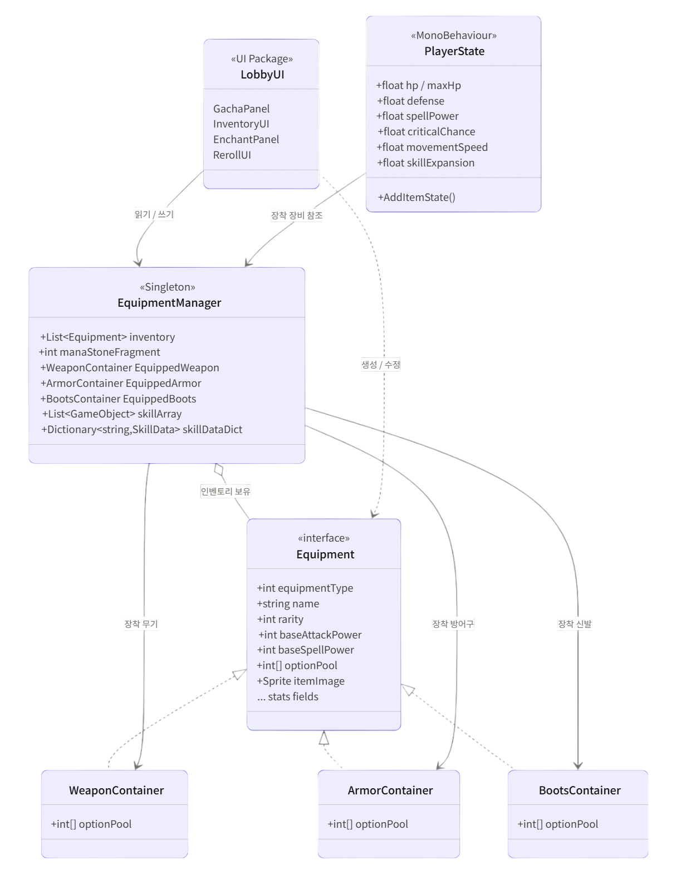
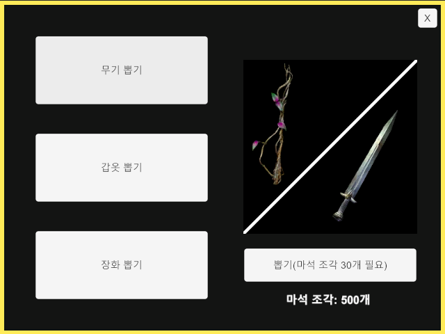
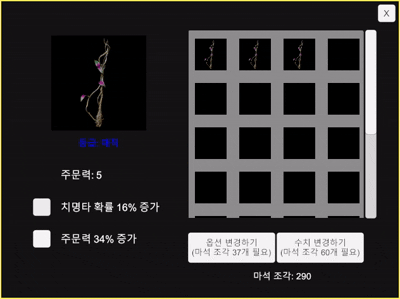

PROJECT 01 — TECHNICAL DOCUMENT
Hive
Survivor.
벌집 모양 셀 위에서 펼쳐지는 탑다운 서바이버 게임의 클라이언트 구조와 핵심 기능을 정리한 기술문서.
벌집 모양 셀 위에서 펼쳐지는 탑다운 서바이버 게임의 클라이언트 구조와 핵심 기능을 정리한 기술문서.
스테이지 진입 · 초기 스폰
Hex Grid 위에서 캐릭터 배치, 첫 웨이브 디렉터가 스폰 곡선을 시드합니다.
웨이브 진행 · 길찾기 + 전투
A* 길찾기로 적이 진입, 풀에서 투사체·데미지 객체를 재사용해 GC alloc 0을 유지합니다.
스킬 선택 · 시너지 발현
레벨업 시 스킬 그래프에서 시너지 가중치를 계산해 추천 후보를 제시합니다.
클리어 · 통계 집계
스테이지 종료 시 프레임/드로우콜/힙 사용량을 기록해 메트릭 페이지로 전송합니다.
원하는 옵션은 잠금해 보존하고, 나머지 옵션만 다시 굴리는 방식으로
버려지는 장비 없이 자신만의
장비를 만들 수 있도록 구현했습니다.
초기 증강 시스템 도입으로 다양한 스탯 강화가 가능했으나, 무작위 증강에만 의존하여 원하는 빌드 구성이 어렵다는 한계가 있었습니다.
해결 방향 : 플레이어가 확정적으로 스탯을 확보할 수 있도록 장비 시스템을 도입해 운적 요소를 보완했습니다. 장비를 통한 확정적 스탯 획득으로 빌드 계획성을 높이고, 증강과 장비의 조합으로 균형 잡힌 성장 시스템을 구축해 랜덤성 의존도를 낮췄습니다.

랜덤 증강을 보완할 확정적 스탯 획득 수단으로 장비 시스템을 설계했습니다. Equipment 인터페이스로 장비 타입을 통일하고, EquipmentManager 싱글톤이 인벤토리·장착 상태·재화를 중앙 관리합니다.
Equipment (interface):
공통 스탯 계약을 정의합니다. 새 장비도 구현체 추가로 편입됩니다.
WeaponContainer / ArmorContainer / BootsContainerEquipment 구현체입니다. 장비별 optionPool을 분리합니다.
EquipmentManager (Singleton)
인벤토리·장착 상태·마나스톤 파편을 중앙 관리합니다.
LobbyUI (UI Package)
가챠·인벤토리·인챈트·리롤 UI 흐름을 묶습니다.
PlayerState
장착 장비를 읽어 플레이어 스탯에 반영합니다.
Equipment 인터페이스 추상화로 새 장비 슬롯 추가 시 기존 클래스 수정 없이 구현체만 확장 가능합니다.

A안 · 단일 Equipment 클래스 + equipmentType 분기
장점: 초기 구현이 빠르고 구조가 단순합니다.
단점: 장비가 늘수록 분기와 전용 필드가 한 클래스에 누적됩니다.
B안 · Equipment 인터페이스 + 장비별 Container 구현
장점: 공통 계약은 유지하고 장비별 옵션 풀은 분리할 수 있습니다.
단점: 초기 인터페이스 구조와 반복 프로퍼티가 추가됩니다.

1
장비 타입별 옵션 풀을 분리하면서도 UI와 스탯 적용은 Equipment 계약 하나만 참조하게 정리했습니다. 리롤 시 락된 옵션은 유지하고, 이미 보유한 옵션을 후보에서 제외해 중복 옵션 생성을 방지했습니다.
90마리 적이 동시에 같은 플레이어를 향해 경로 재계산을 요청하면서 메인 스레드 1프레임을 통째로 점유.
Wave 4 진입 직후 0.5초간 16~22ms 스파이크가 매 프레임 발생. Profiler 상 HexAStar.FindPath가
한 프레임 내에 90회 호출됨.
적 AI가 FixedUpdate마다 길찾기를 호출하도록 작성되어 있었고, 적 풀이 한꺼번에 활성화되면서 같은 프레임에 모두
1차 경로를 요구. 캐시는 비어 있는 상태였음.
측정 후 결정. 모든 최적화는 Profiler 캡쳐 → 가설 → 코드 변경 → 재측정 순서를 지켰습니다. 추측으로 손대지 않은 덕분에 실패 횟수가 0이었습니다.
인터페이스 분리. 길찾기·풀·디렉터 모두 인터페이스로 추상화한 덕에, 이후 다른 프로젝트에서 거의 그대로 이식할 수 있었습니다.
테스트가 늦었다. 풀 누수 트러블슈팅은 unit test가 있었다면 더 빨리 잡혔을 사례입니다. 다음 프로젝트는 Pool 같은 기반 시스템부터 테스트를 깔고 시작합니다.
아트 파이프라인 미숙. Addressables 그룹 설계를 늦게 시작해 빌드 사이즈를 한 번 더 줄일 기회를 놓쳤습니다.
1 · ECS / Burst 도입
투사체 1500개 시뮬레이션은 ECS의 좋은 후보. Hex 좌표 산술도 Burst 친화적입니다.
2 · Editor 도구의 정착
PoolInspector를 시작점으로, 게임 도메인 전용 검사 도구를 의식적으로 더 만들어 봅니다.
3 · Telemetry
출시 후 디바이스별 FPS·세션 길이 데이터를 수집하는 파이프라인을 처음부터 설계합니다.